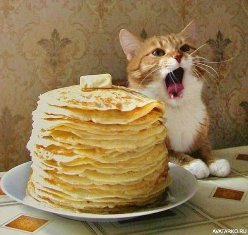
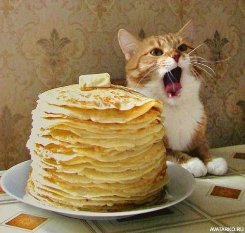

Роберт Рождественский
Человеку надо мало:
чтоб искал
и находил.
Чтоб имелись для начала
Друг — один
и враг — один…
Человеку надо мало:
чтоб тропинка вдаль вела.
Чтоб жила на свете
мама.
Сколько нужно ей — жила..
Человеку надо мало:
после грома — тишину.
Голубой клочок тумана.
Жизнь — одну.
И смерть — одну.
Утром свежую газету —
с Человечеством родство.
И всего одну планету:
Землю!
Только и всего.
И — межзвездную дорогу
да мечту о скоростях.
Это, в сущности,- немного.
Это, в общем-то,- пустяк.
Невеликая награда.
Невысокий пьедестал.
Человеку мало надо.
Лишь бы дома кто-то
ждал.
 
